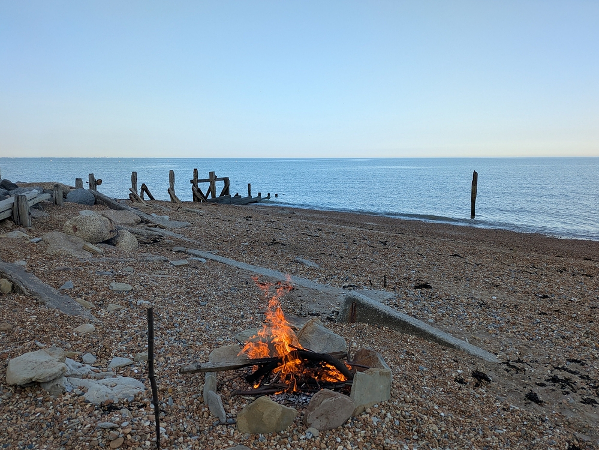
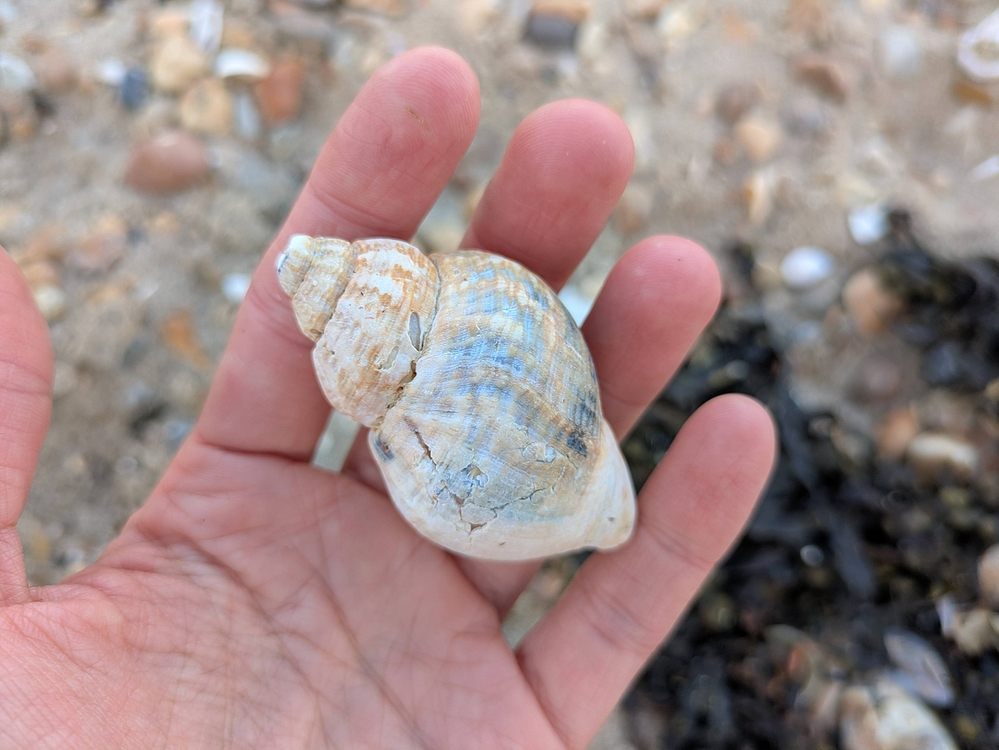
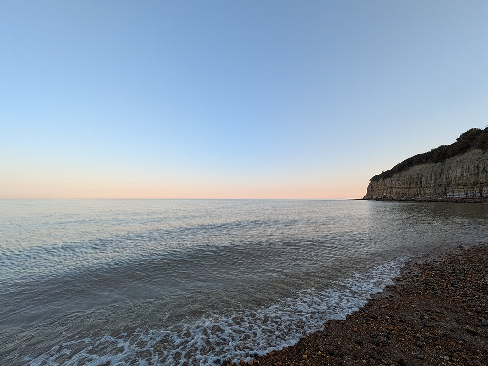
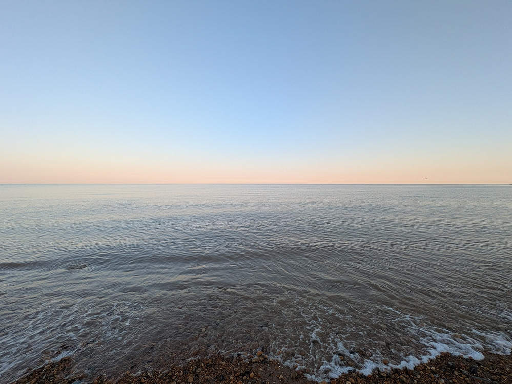
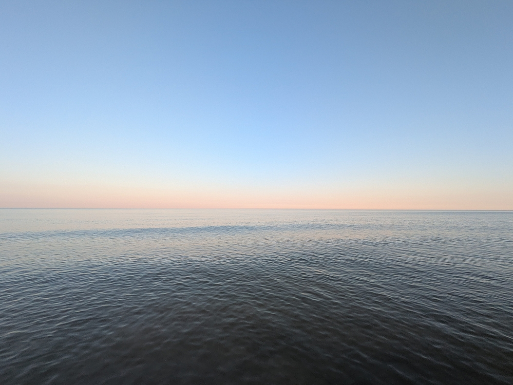
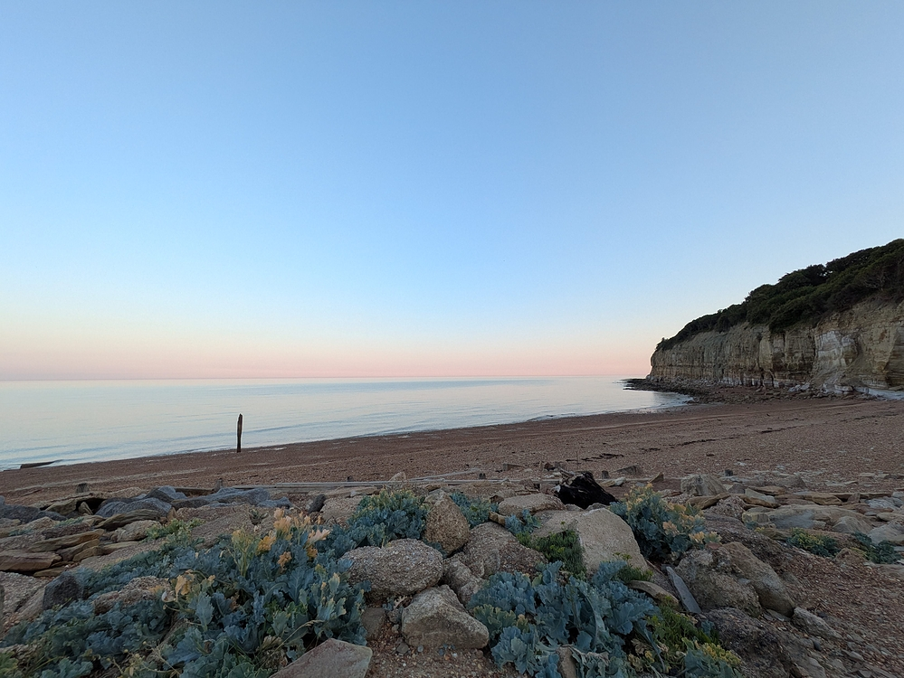
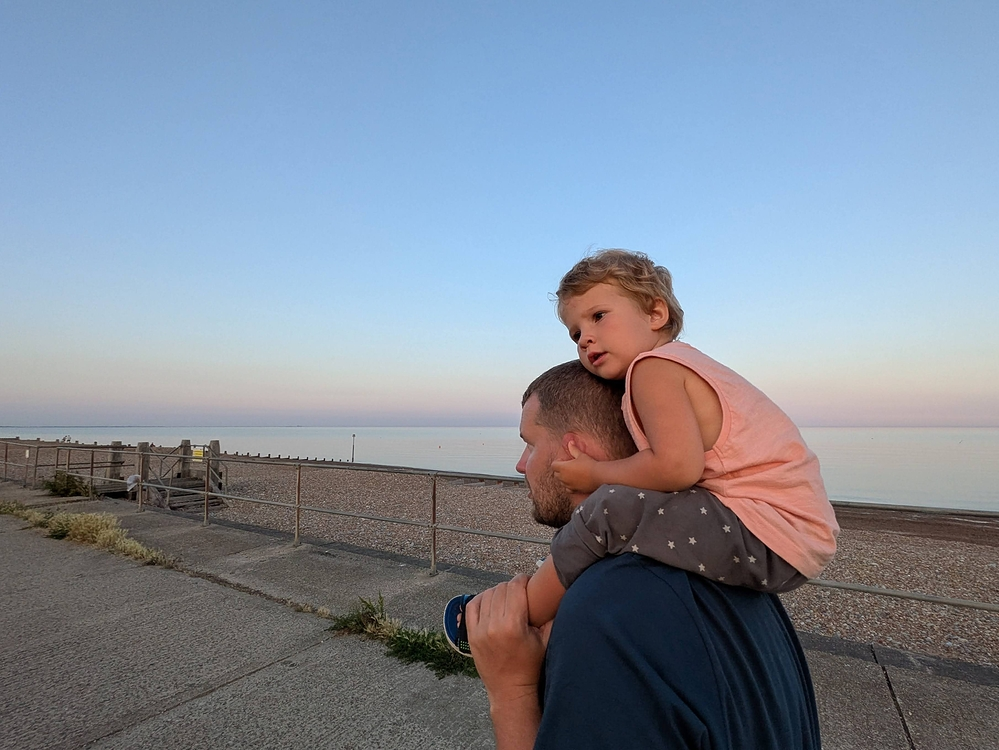
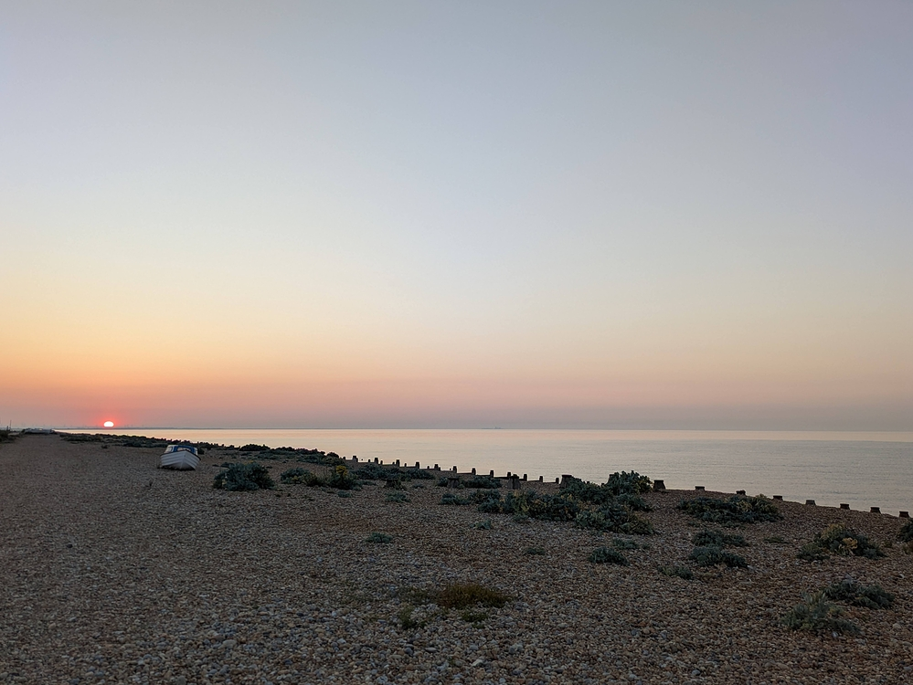
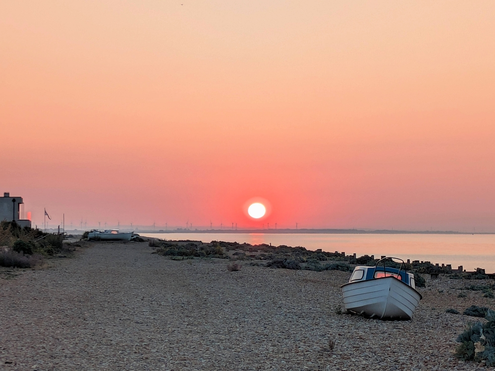
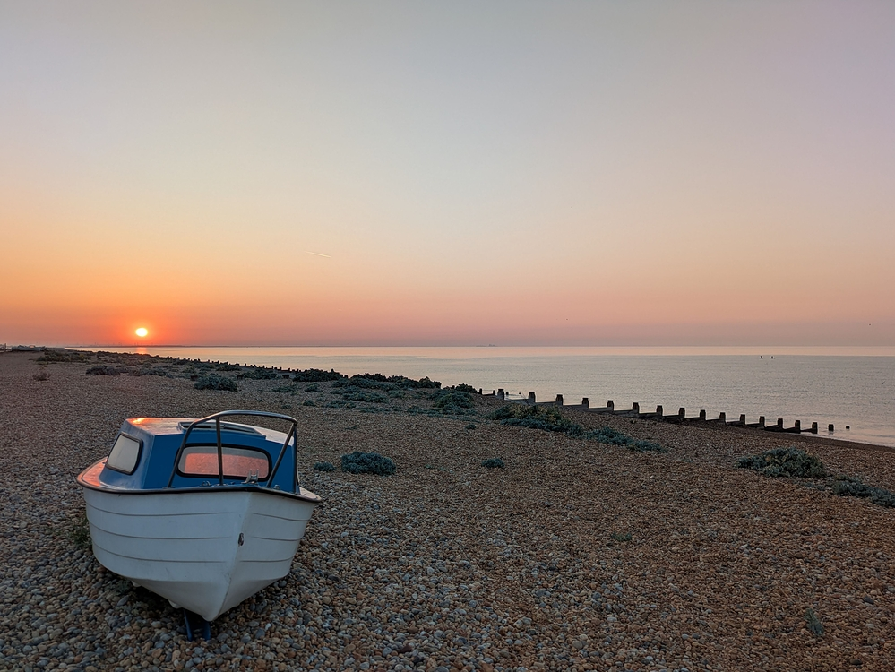

Фэрлайт 2026 - Прощание
Это часть 5 из 5. Фотки и ролики в хорошем качестве.
Вечером перед отъездом мы пошли прощаться с морем: разожгли костерок и поджарили немного хлеба с сыром. На этот раз костёр был не на больших камнях, а на гальке: мы хотели посмотреть, будут ли мелкие камни взрываться так же, как большие. На всякий случай сели подальше от огня. Оказалось, мелкие камни тоже взрываются: то и дело костёр постреливал на нас угольками. Мы были к этому уже готовы, поэтому никто не пострадал. Сергей Анатольич сделал очень классный борт из больших плоских камней.

Последняя найденная в этот приезд ракушка: морской рожок.

Солнце зашло. Все пошли домой, кроме нас с Сергей Анатольичем и Янки. Мы затушили костёр (опять пригодилось Янкино пластмассовое ведро для построения песочных замков) и пошли к уходящему морю — в последний раз побродить по колено в воде.

Шшуххх!… Волны накатывают на берег.

Ветер улёгся — море спокойное и тихое.

Пора уходить, эх! Рыжее небо у горизонта постепенно стало фиолетовым.

Задумчивая Янка ехала на Сергей Анатольиче — она тоже почувствовала, что это прощание с морем. Мне было жалко уходить — жалко расставаться с закатом, с ночным небом, с шумом волн, с маленькими мирами в озерцах, оставленных приливом в расщелинах скал. Всё на этом побережье дышит жизнью, и под каждым волосатым от водорослей камнем кто-то живет: моллюски, улитки, крабы, каракатицы — даже сами камни, изъеденные до дыр и щетинистые от балянусов — как будто живые. Каждый раз, когда я ухожу из этого места, я думаю, что они останутся — и будут снова греться на солнце во внутренних морях. Останутся и древние следы динозавров на Линесском уступе.

Никогда ещё мы так долго не жили на море, и от этого расставаться с ним было особенно тяжело. Когда я думаю, что где-то будет ночь, звёздное небо, гаснущая вечерняя заря — а потом загорающаяся утренняя — так вот, когда я про всё это думаю и представляю, мне кажется ужасно неправильным и странным, что мы будем в это время спать у себя кровати. Сидеть у края палатки, нахлобучив всю свою немногочисленную одежду, и греться от костра, или бродить по колено в воде — вот как надо. Ну зачем же тратить такую ночь на спаньё!!! Не, я конечно всё понимаю. Но! По дороге домой мне пришла в голову одна идея, которую я немедленно сообщила Сергей Анатольичу. Ещё не всё потеряно: можно устроить наблюдение рассвета в 4:54 утра. Сергей Анатольич согласился на это с удивительной лёгкостью.
На следующее утро в 4:45 я была на набережной (с почищенными зубами, но без сделанной зарядки). Сергей Анатольич ждал моего сигнала в доме, чтобы выйти когда дойдёт до дела и не оставлять спящую Янку надолго одну — кто его знает, когда это солнце на самом деле взойдёт. Поначалу всё выглядело так, как будто оно и не собиралось выходить: только по бледному белому пятну у самого горизонта можно было понять, откуда его ожидать. 4:50 — ничего. 4:54 (обещанное время рассвета) — всё ещё ничего. 4:57 — из-за горизонта показалось ярко-алое пятно!!! Полундра! Свистать всех наверх!!!! Я замахала как бешеная, и вскоре Сергей Анатольич уже стоял рядом. На фотках все цвета искажены: небо грязновато-серое, а солнце белое. На самом деле небо было розоватым, а солнце — ярчайшего алого цвета.

Вот оно. :)

Мы ещё немного подождали, и когда солнце стало из алого рыжеватым, а на воде появилась золотистая дорожка, пошли домой. Спать уже особого смысла не было — в шесть пора было вставать и поднимать Янку. Но можно было спокойно сделать зарядку и немного поваляться. Я вообще люблю рано вставать — поспать можно потом в машине по дороге домой.

На этом заканчивается рассказ про Фэрлайт-2026. Такие пироги!
comments powered by Disqus